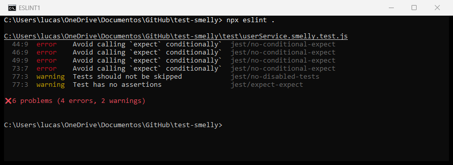
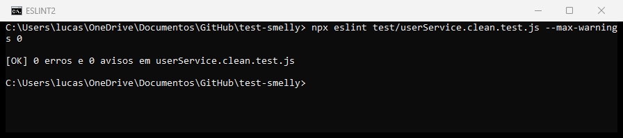
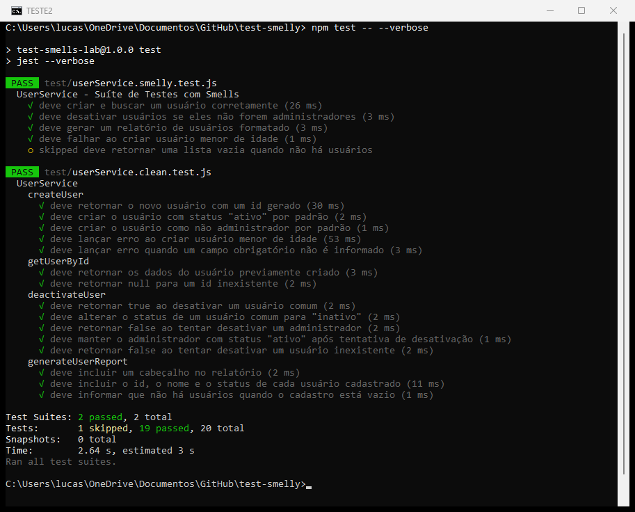

A suíte original (test/userService.smelly.test.js) passa com sucesso (4 testes aprovados e 1 ignorado), mas a leitura manual revelou vários maus cheiros. Os três mais graves são descritos abaixo.
Onde: teste “deve desativar usuários se eles não forem administradores”, que percorre um array com for e decide quais asserções executar com if/else.
Por que é um mau cheiro: um teste deve ter um único caminho de execução, determinístico. Com laços e condicionais, o próprio teste passa a ter lógica que pode conter bugs, e não fica claro quais asserções realmente rodaram. Risco: se a lista estiver vazia, ou se os dados mudarem de forma que um ramo nunca seja executado, o teste continua “verde” sem verificar nada. Além disso, quando falha, não se sabe se o problema foi com o usuário comum ou com o administrador.
try/catch)Onde: teste “deve falhar ao criar usuário menor de idade”. O expect está apenas dentro do bloco catch.
Por que é um mau cheiro: é uma forma de asserção condicional; a verificação só acontece se a exceção for lançada. Risco: se a regra de validação de idade for removida do userService.js, nenhuma exceção ocorre, o catch não roda, nenhum expect é executado e o teste passa. É um falso positivo que esconde exatamente o bug que ele deveria detectar (o mesmo tipo de fraqueza que deixava mutantes sobreviverem no trabalho anterior).
Onde: teste “deve gerar um relatório de usuários formatado” compara a linha exata `ID: ${id}, Nome: Alice, Status: ativo\n` e verifica o início literal da string; já o teste “deve criar e buscar um usuário corretamente” exercita dois comportamentos (createUser e getUserById) com dois “Act” no mesmo teste.
Por que é um mau cheiro: o teste do relatório está acoplado à implementação (formatação, separadores, quebra de linha), não ao comportamento (o relatório conter os dados do usuário). Risco: qualquer mudança cosmética, como trocar a vírgula por “|” (o próprio código avisa que “o formato pode mudar”), quebra o teste sem que exista bug, gerando retrabalho e desconfiança na suíte. No caso do Eager Test, uma falha não indica qual das operações quebrou.
Outros smells observados: Teste ignorado/vazio (test.skip com um TODO e sem asserções, que dá falsa sensação de cobertura) e Convidado Misterioso leve (o objeto global dadosUsuarioPadrao definido fora do teste, que obriga o leitor a procurar os dados em outro lugar).
Foram instalados eslint (v8, compatível com o arquivo .eslintrc.json pedido no enunciado) e eslint-plugin-jest, com a configuração indicada (eslint:recommended + plugin:jest/recommended e as regras no-disabled-tests, no-conditional-expect e no-identical-title). Resultado da primeira execução de npx eslint .:

| Linha | Regra | Smell correspondente (análise manual) |
|---|---|---|
| 44, 46, 49 | jest/no-conditional-expect | Lógica condicional (for + if/else) – item 1.1 |
| 73 | jest/no-conditional-expect | expect dentro do catch – item 1.2 |
| 77 | jest/no-disabled-tests, jest/expect-expect | Teste ignorado e sem asserções |
Comentário: a ferramenta automatizou a detecção dos smells estruturais, que podem ser reconhecidos pela árvore sintática do código: ela encontrou, em segundos e com a linha exata, todas as asserções condicionais (inclusive o caso do try/catch, que passa despercebido numa leitura rápida) e o teste desabilitado/vazio, coincidindo com a análise manual. Por outro lado, smells semânticos, como o Teste Frágil do relatório e o Eager Test, não foram apontados, pois dependem de entender a intenção do teste. Ou seja, o linter não substitui a revisão humana, mas funciona como uma barreira automática e repetível (podendo rodar no CI) contra os problemas mais comuns.
Foi criado o arquivo test/userService.clean.test.js (o original foi mantido intacto). A suíte foi reorganizada em blocos describe por método, e cada teste segue estritamente o padrão Arrange, Act, Assert, com um único comportamento verificado. O exemplo mais problemático foi o teste de desativação:
test('deve desativar usuários se eles não
forem administradores', () => {
const usuarioComum = userService.createUser(
'Comum', 'comum@teste.com', 30);
const usuarioAdmin = userService.createUser(
'Admin', 'admin@teste.com', 40, true);
const todosOsUsuarios =
[usuarioComum, usuarioAdmin];
for (const user of todosOsUsuarios) {
const resultado =
userService.deactivateUser(user.id);
if (!user.isAdmin) {
expect(resultado).toBe(true);
const usuarioAtualizado =
userService.getUserById(user.id);
expect(usuarioAtualizado.status)
.toBe('inativo');
} else {
expect(resultado).toBe(false);
}
}
});
describe('deactivateUser', () => {
test('deve retornar true ao desativar um
usuário comum', () => {
// Arrange
const usuarioComum = userService.createUser(
'Comum', 'comum@teste.com', 30);
// Act
const resultado =
userService.deactivateUser(usuarioComum.id);
// Assert
expect(resultado).toBe(true);
});
test('deve alterar o status de um usuário
comum para "inativo"', () => { ... });
test('deve retornar false ao tentar
desativar um administrador', () => {
// Arrange
const usuarioAdmin = userService.createUser(
'Admin', 'admin@teste.com', 40, true);
// Act
const resultado =
userService.deactivateUser(usuarioAdmin.id);
// Assert
expect(resultado).toBe(false);
});
test('deve manter o administrador com status
"ativo" após tentativa...', () => { ... });
test('deve retornar false ao tentar desativar
um usuário inexistente', () => { ... });
});
Decisões e como corrigiram os smells:
for/if: cada cenário (usuário comum, administrador, id inexistente) virou um teste próprio, com caminho único. Toda asserção agora é sempre executada, eliminando os erros no-conditional-expect.createUser e getUserById.try/catch foi substituído por expect(() => userService.createUser(...)).toThrow('O usuário deve ser maior de idade.'), que falha se a exceção não for lançada. Também foi adicionado o caso de campo obrigatório ausente.toContain(alice.id), 'Alice', 'ativo') e o cabeçalho com toMatch(/Relatório de Usuários/), sem depender da formatação exata da linha.test.skip virou “deve informar que não há usuários quando o cadastro está vazio”, com asserção real. Os dados passaram a ser declarados dentro de cada teste (fim do Convidado Misterioso).

npm test: 2 suítes aprovadas, 19 testes passando.O ESLint não aponta nenhum problema em userService.clean.test.js (mesmo com --max-warnings 0) e a suíte completa passa, tanto o arquivo antigo quanto o novo (a nova suíte tem 15 testes focados).
O trabalho mostrou que “testes passando” não é sinônimo de “testes bons”: a suíte original estava verde, mas tinha asserções que podiam nunca ser executadas, um teste capaz de esconder a remoção de uma regra de negócio e verificações presas à formatação. Testes limpos, com padrão AAA, um comportamento por teste, sem lógica condicional e com nomes descritivos, são mais fáceis de ler e manter, falham pelo motivo certo e apontam exatamente onde está o problema, o que aumenta a confiança para refatorar o código de produção. As ferramentas de análise estática complementam esse cuidado: o ESLint com eslint-plugin-jest detectou de forma automática, rápida e repetível os smells estruturais, e pode ser integrado ao CI para impedir que novos problemas entrem no projeto. Combinadas com a revisão humana, que ainda é necessária para smells semânticos como fragilidade e testes ansiosos, essas práticas contribuem diretamente para a qualidade e a sustentabilidade do software ao longo do tempo.